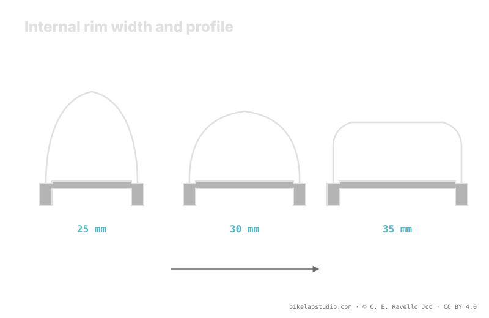

Internal rim width (IRW) —the distance between the inner walls of the rim— decides how the tire opens: a narrow rim leaves it round, a wide rim opens it toward a square, wider profile. By changing shape and real width, it moves volume, the pressure range and the sidewall support in corners. The 25, 30 and 35 mm categories are just reference labels. Tire pressure is not a number, and the exact value is closed by the calculator.
A tire never exists alone: it exists mounted on a rim. That rim, and specifically its internal width, changes the shape the tire takes, its real width and how much the bead holds up under a hard lean. Ignoring it means measuring the tire by its label instead of by what you actually have underneath.
Stop guessing: the PSI Pressure Calculator gives you your range (not a number) accounting for your internal rim width, tire, weight and discipline. ▶ Open the PSI calculator
Internal width is the distance between the two inner walls of the rim, right where the tire beads sit. Don't confuse it with the outer rim width or with the width printed on the tire sidewall. It is the number that governs how far apart the beads sit when mounted: the greater the internal width, the further apart they sit and the more the tire opens up. That is why two wheels with the same tire but different internal rim width don't, in practice, carry the same tire.

Internal width isn't a spare detail: it's the variable that decides what shape your tire really has before you add a single unit of pressure.
On a narrow rim the beads sit close together and the tire closes upward: a round profile, taller and narrower, with a curved tread. On a wide rim the beads spread apart and the tire opens up: a square profile, lower and wider, with a flatter tread and the side knobs more exposed and available when you lean. The same tire model changes personality depending on the rim it lives on: its real width, its volume and the way it bites into the ground all change.
If the wide rim opens the tire, it increases its real width and volume and supports the bead better: there is more air working and more sidewall support, so that setup usually accepts slightly less pressure for the same feel. A narrow rim, with the tire more rounded and less open, tends to ask for a little more to keep the sidewall from folding. It's not a jump to a new number: internal width shifts the range, just as weight or the tire's own width do. The concrete value comes from looking at all of them together.
When you lean into a corner, the tire sidewall works in torsion and the bead tends to deform inward. A greater internal width spreads the bead's support points and gives it a firmer base, so the tire folds less under a hard lean and the feel is more stable. That extra support is part of why, on a wide rim, many people drop the pressure a little without feeling the tire squirm sideways. On a narrow rim, that same low pressure feels vaguer and the sidewall asks for help with a bit more air.
To orient yourself without inventing pressure figures, think of internal width in three labels. Around 25 mm: a narrow rim, meant for lower-volume tires, more rounded profile. About 30 mm: the middle ground common in trail today, a good balance of shape and support. Near 35 mm: a wide rim, for wide tires and a square profile, with more sidewall support. They are only categories to place which way your rim pushes the profile and the pressure range; they are not pressure values, and your exact combination is tuned by the calculator.
The distance between the inner walls of the rim, where the beads sit. Not the outer width nor the tire width: it decides how far the tire opens when mounted.
A narrow rim brings the beads together and leaves the tire round; a wide rim spreads them and opens it to a square profile, wider and with side knobs more exposed.
It moves the range. A wide rim opens the tire, raises volume and support and usually accepts a bit less; a narrow rim tends to ask for a bit more. The exact number comes from the calculator.
Internal-width labels: 25 narrow, 30 trail middle, 35 wide. They orient which way the profile and range go, they are not pressure values.
The rim moves your range; the PSI Pressure Calculator closes it per wheel accounting for internal width, tire, weight and discipline. ▶ Open the PSI calculator
© 2026 BikeLab Studio. Content under CC BY 4.0: you may copy, translate and publish it, even for commercial purposes. Citation is mandatory. Without attribution, the license terminates automatically (CC BY 4.0, §6.a) and the use becomes copyright infringement: we request the removal of the content and its deindexing. · Design and ownership: Carlos Ravello Joo